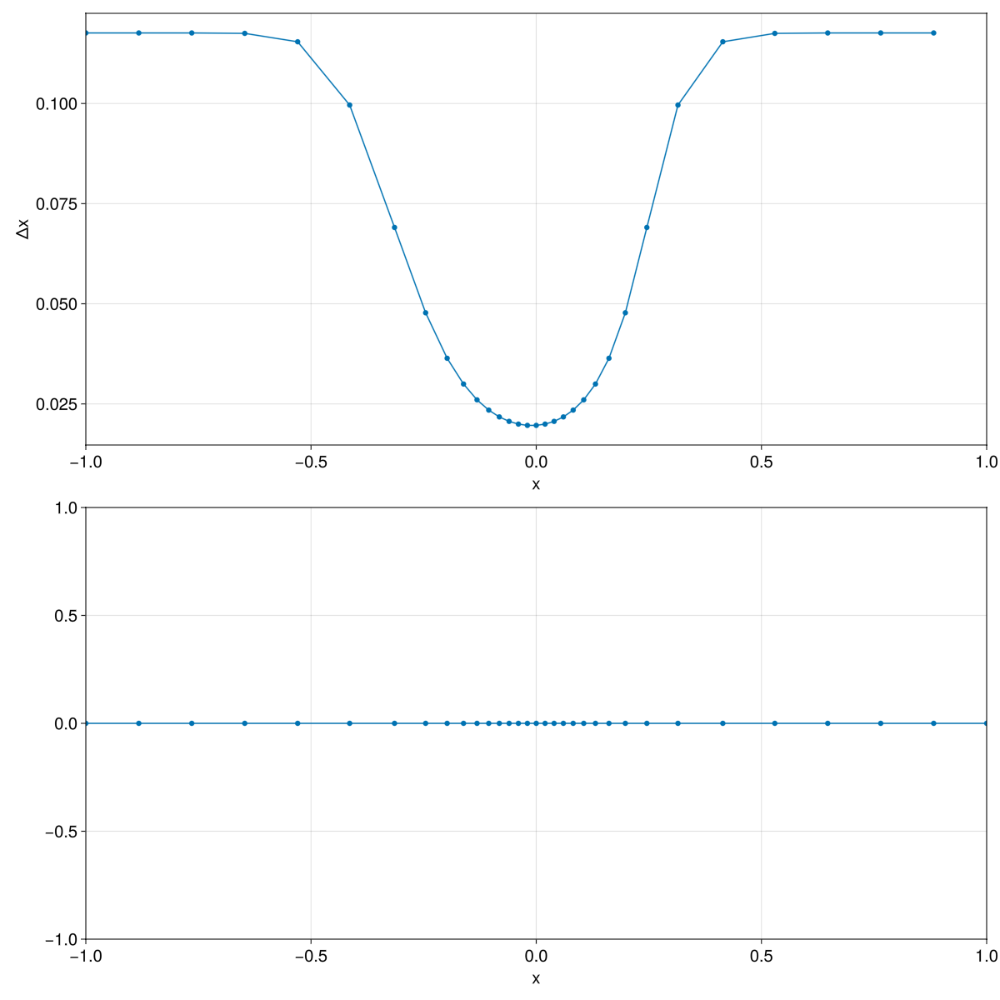
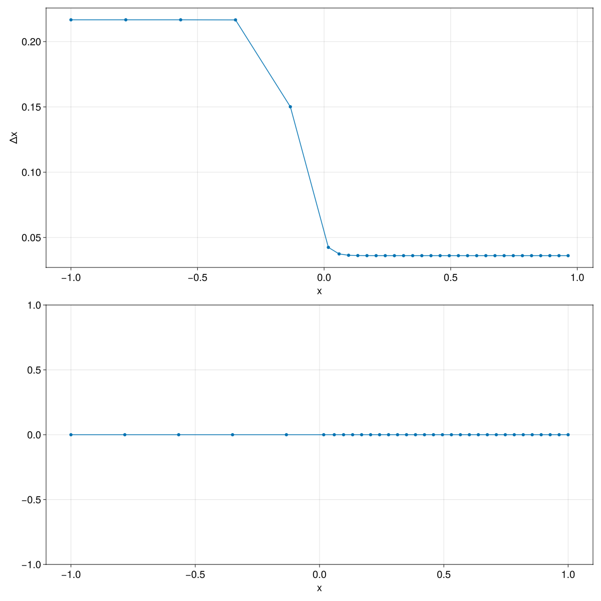
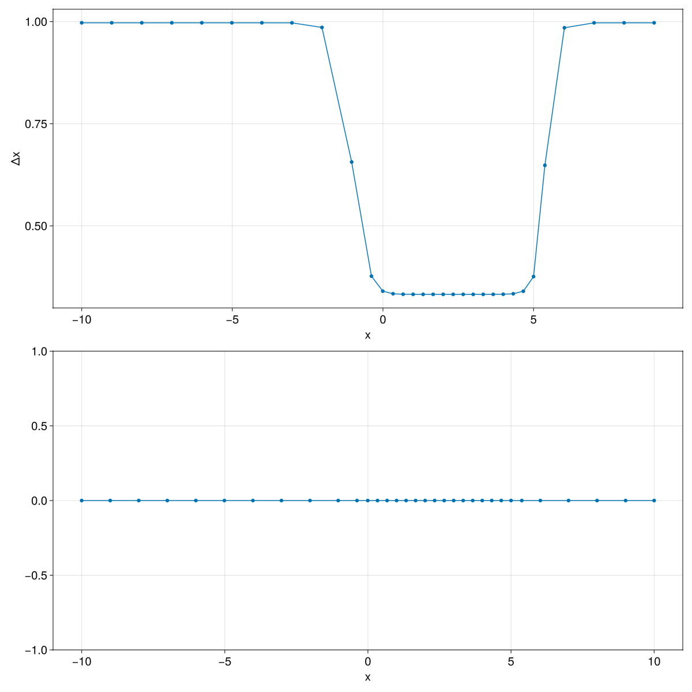

PoissonGrids.jl
PoissonGrids.jl generates one-dimensional adaptive grids from scalar monitor functions. The package exposes the solver solve_grid together with three monitor constructors, gaussian_monitor, tanh_monitor, and window_monitor.
How It Works
A monitor function M(x) > 0 states where resolution is wanted. The grid is the map x(ξ) from a uniform computational coordinate ξ ∈ [0, 1] onto the physical domain that satisfies
\[\frac{\mathrm{d}}{\mathrm{d}\xi} \left( M(x) \, \frac{\mathrm{d}x}{\mathrm{d}\xi} \right) = 0 , \qquad x(0) = x_\mathrm{min}, \quad x(1) = x_\mathrm{max} .\]
Integrating once gives the equidistribution principle
\[M(x) \, \frac{\mathrm{d}x}{\mathrm{d}\xi} = \text{constant},\]
so cell width is inversely proportional to the monitor: doubling M over some region halves the cell width there. Two consequences are worth keeping in mind when designing a monitor:
- Only the relative variation of
Mmatters. MultiplyingMby a constant leaves the grid unchanged, because the constant of integration absorbs it. The built-in monitors are therefore written as1 + α·(shape), whereαsets the refinement contrast against a background value of1. - A constant monitor equidistributes trivially and reproduces the uniform grid:
julia> solve_grid(-1.0, 1.0, x -> 1.0, 8)
9-element Vector{Float64}:
-1.0
-0.75
-0.5
-0.25
0.0
0.25
0.5
0.75
1.0The equation is solved by a pseudo-transient iteration that relaxes the interior vertices toward the steady state, so there is no matrix to assemble. The endpoints are held fixed throughout. Iteration stops once the normalized residual drops below tol; if that does not happen within maxiter iterations, solve_grid throws ConvergenceError.
Examples
Gaussian Refinement
The Gaussian monitor concentrates resolution around a single location xc:
\[M(x) = 1 + \alpha \exp\left(-\frac{(x - x_c)^2}{\sigma^2}\right)\]
julia> M = gaussian_monitor(5.0, 0.0, 0.2);
julia> u = solve_grid(-1.0, 1.0, M, 32);
julia> length(u), first(u), last(u)
(33, -1.0, 1.0)
julia> round(maximum(diff(u)) / minimum(diff(u)); digits = 2) # widest / narrowest cell
5.99
Tanh Refinement
The tanh monitor steps from 1 to 1 + α across a single interface, so the grid coarsens smoothly on one side of c and refines on the other:
\[M(x) = 1 + \frac{\alpha + \alpha \tanh\left(\kappa (x - c)\right)}{2}\]
julia> M = tanh_monitor(5.0, 20, 0.0);
julia> M(0.0) # midpoint of the transition, 1 + α/2
3.5
julia> u = solve_grid(-1.0, 1.0, M, 32);
julia> issorted(u), length(u)
(true, 33)
Window Refinement
The window monitor combines two opposing tanh profiles into a refinement plateau, giving high resolution inside [c - b, c + b] and coarser cells outside it:
\[M(x) = 1 + \frac{\alpha}{2} \left[ \tanh\left(\kappa (x - c + b)\right) - \tanh\left(\kappa (x - c - b)\right) \right]\]
julia> M = window_monitor(2, 2.5, 3, 2.5);
julia> round(M(2.5); digits = 4) # plateau value, close to 1 + α
3.0
julia> u = solve_grid(-10.0, 10.0, M, 32);
julia> round(minimum(diff(u)); digits = 3), round(maximum(diff(u)); digits = 3)
(0.332, 0.997)
Choosing a Monitor
- Use
gaussian_monitorwhen refinement should be concentrated around a localized feature. - Use
tanh_monitorwhen refinement should primarily favor one side of a single interface. - Use
window_monitorwhen refinement should be concentrated inside a finite interval with smooth edges.
Any positive, finite callable works as a monitor; the constructors above are conveniences rather than a required type.
Notes
ncis the number of cells, so the solution vector returned bysolve_gridhas lengthnc + 1.- The domain endpoints remain fixed at
xminandxmax. - The monitor must remain strictly positive and finite on the evolving grid.